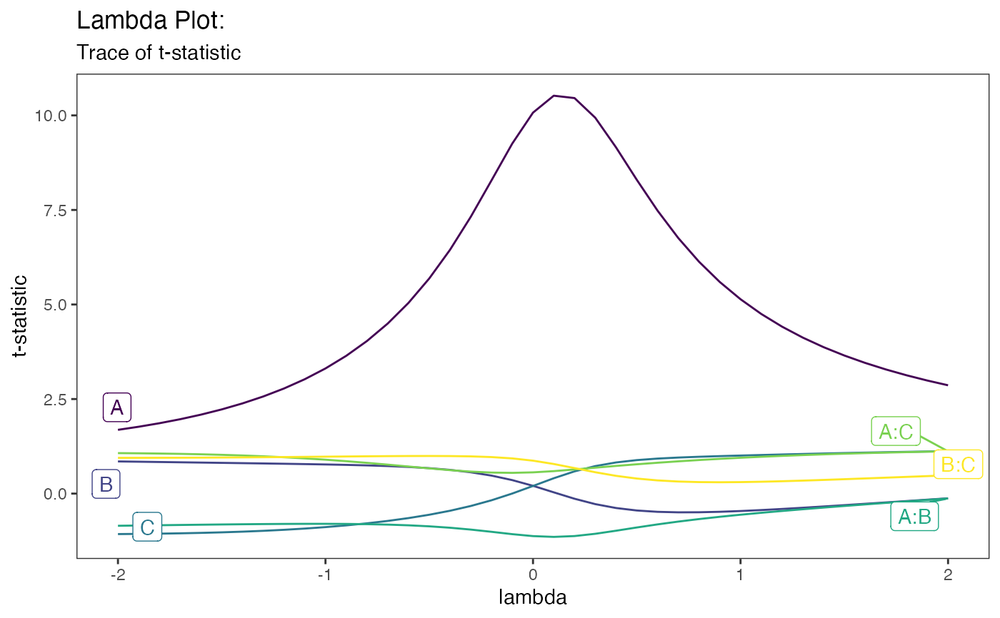
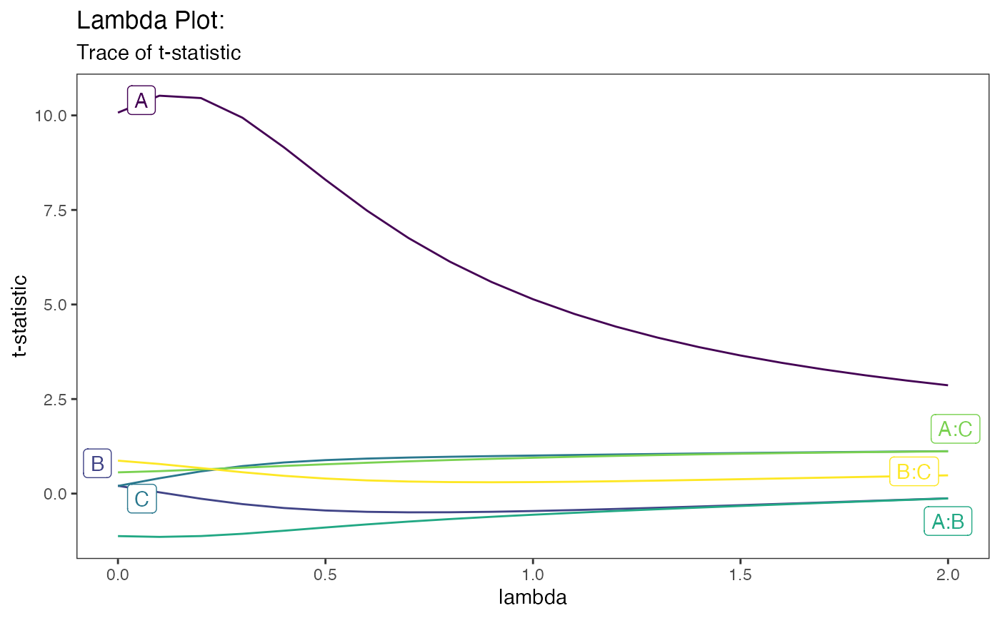

Lambda Plot: Trace of t-statistics
lambda_plot(
model,
lambda = seq(-2, 2, by = 0.1),
color_palette = "viridis",
alpha = 1,
direction = 1,
showplot = TRUE
)Model of class "lm" or "glm"
sequence of lambda values to consider for plot. Default is seq(-2,2,0.1)
A character string indicating the color map option to use. Eight options are available: "viridis","cividis","magma","inferno","plasma","rocket","mako","turbo". Default is 'viridis'
The alpha transparency, a number in [0,1]
Sets the order of colors in the scale. If 1, the default, colors are ordered from darkest to lightest. If -1, the order of colors is reversed
logical indicating to show the main effect plots. If false, a list of tibbles is returned used to obtain the main effects for each factor. Default is TRUE
Lambda plot for tracing t-staitics across different values of lambda (in ggplot2)
mod = lm(s2 ~ (A+B+C)^2,data=original_epitaxial)
lambda_plot(mod)

lambda_plot(mod,lambda = seq(0,2,0.1))

lambda_plot(mod,lambda = seq(0,2,0.1),showplot = FALSE)
#> # A tibble: 21 × 7
#> lambda A B C `A:B` `A:C` `B:C`
#> <dbl> <dbl> <dbl> <dbl> <dbl> <dbl> <dbl>
#> 1 0 10.1 0.206 0.202 -1.12 0.562 0.871
#> 2 0.1 10.5 0.0335 0.406 -1.14 0.594 0.783
#> 3 0.2 10.5 -0.136 0.587 -1.12 0.638 0.675
#> 4 0.3 9.94 -0.278 0.727 -1.06 0.685 0.565
#> 5 0.4 9.15 -0.381 0.823 -0.982 0.732 0.470
#> 6 0.5 8.30 -0.447 0.885 -0.896 0.775 0.398
#> 7 0.6 7.48 -0.482 0.926 -0.814 0.816 0.349
#> 8 0.7 6.76 -0.495 0.953 -0.740 0.853 0.319
#> 9 0.8 6.13 -0.494 0.974 -0.674 0.887 0.304
#> 10 0.9 5.60 -0.481 0.991 -0.614 0.919 0.300
#> # … with 11 more rows